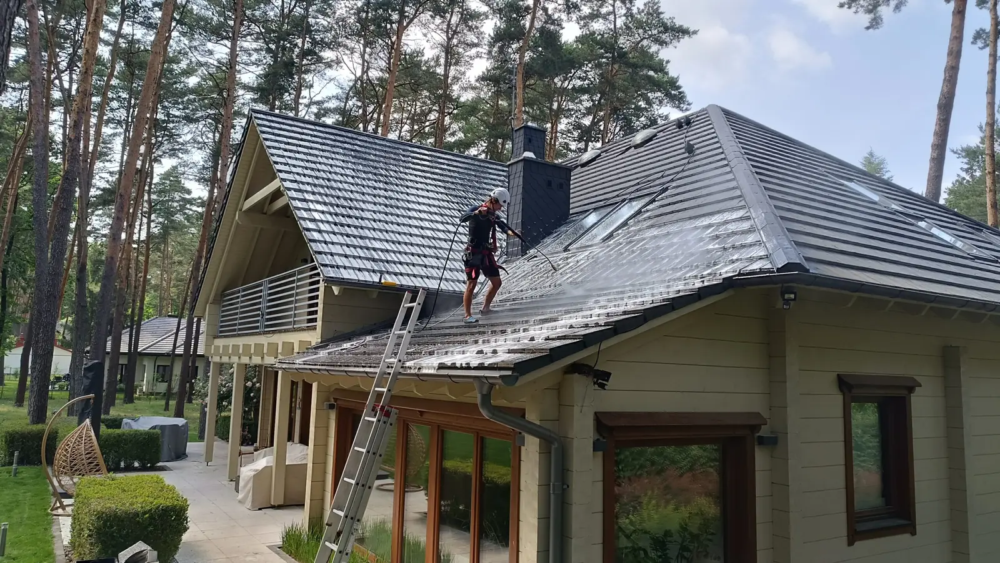

Mycie dachów
Usuwam mech, porosty i sadzę ciśnieniem dobranym tak, żeby nie niszczyć dachówki. Na życzenie impregnuję dach, co przedłuża jego trwałość.

Dachy, elewacje, kostka brukowa i tarasy. Myję gorącą wodą, a na wysokości pracuję z liny i z kosza. Przed pracą robię mycie próbne, żeby pokazać efekt.
Przyjeżdżam na bezpłatną wycenę i myję mały fragment dachu, ściany albo kostki. Od razu widać granicę między brudnym a czystym - i to, jak będzie wyglądać całość.
Na każdym zdjęciu u góry stan przed myciem, na dole po. Żółta linia to granica, którą widać już na myciu próbnym.
Dla domów, wspólnot i firm. Usuwam glony, mech, porosty, sadzę, rdzę i plamy z oleju.
Usuwam mech, porosty i sadzę ciśnieniem dobranym tak, żeby nie niszczyć dachówki. Na życzenie impregnuję dach, co przedłuża jego trwałość.
Zmywam kurz, glony i porosty, a po umyciu zabezpieczam ścianę preparatem antygrzybicznym, który chroni przed ponownym zarastaniem.
Talerzem do podjazdów usuwam brud, mech i plamy z oleju bez uszkadzania nawierzchni. Na koniec mogę zaimpregnować kostkę.
Pracuję profesjonalną spalinową myjką FALCH z gorącą wodą - tak schodzą nawet najbardziej uporczywe zabrudzenia. Mam przeszkolenie potrzebne do tej pracy.
Dachy, elewacje, kostka i obiekty firmowe w Warszawie i okolicach.
"Latem Pan Łukasz umył u nas dach, elewację i opaskę wokół domu - efekt jest świetny, wszystko wygląda jak nowe. Całość poszła szybko i bardzo profesjonalnie."
"Dzięki Panu Łukaszowi zaoszczędziliśmy kilka tysięcy złotych na malowaniu elewacji, a efekt przeszedł moje najśmielsze oczekiwania."
"Elewacja wygląda jak nowa, a dach odzyskał swój dawny blask. Pan Łukasz indywidualnie doradził, jakim preparatem najlepiej doczyści zabrudzenia."
"Dach umyty z dbałością o szczegóły, bez pośpiechu, dobry sprzęt. Żadnych problemów z komunikacją. Polecam"
"Fachowo i solidnie wykonana usługa. Jesteśmy bardzo zadowoleni, dach został oczyszczony pierwszy raz po 20-tu latach i wygląda świetnie."
"Usługę mycia hali jako podwykonawca wykonano profesjonalnie, terminowo i z dużą dbałością o szczegóły."
"Super efekt. Profesjonalnie. Kostka wygląda jak nowa. Korzystnie cenowo."
"Bardzo sprawne wykonanie usługi, czyszczenie rynien, uszczelnienie i montaż siatki zabezpieczającej. Szybki kontakt, doradztwo i sprawne umówienie terminu."
Zadzwoń albo napisz - umówimy bezpłatną wycenę na miejscu z myciem próbnym.
Działam na terenie Warszawy i okolic do 50 km, m.in. Marki, Legionowo, Jabłonna, Radzymin, Wołomin i Piaseczno.